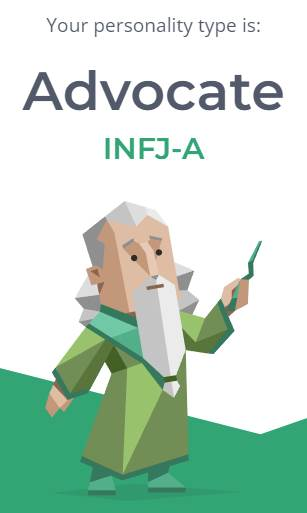

I was born and raised in Melbourne, Australia however I come from a Vietnamese heritage, my parents immigrated in the early 90s to Australia looking for a better life. At home I speak Vietnamese with my parents as they don’t know much English, over the years this has taught me to be fluent in Vietnamese which I have found quite useful in communicating to other Viet speaking people whether that be at work or overseas. I have lived in West Melbourne my entire life in a suburb called “Brooklyn” which is just under a 20 minute drive to the CBD. I am currently 21 years old and undertaking my final year of my Bachelor’s degree in Business management at RMIT university with a major in Logistics and Supply Chain Management (Applied), in my family I am actually the first person to have gone to Uni, to which I feel both proud and grateful for.
What do I do outside of my studies?
On the days when I’m not studying I work part-time at Supercheap Auto, I have always been interested in cars since I was a child and working there for the last 2-3 years I have received a lot of on-the-job training which has taught me a great amount about the automotive and retail auto part industry, moreover the experience and knowledge gained has taught me valuable soft skills that I have been applying during Uni and will definitely be useful for my career post graduating.
Examples of soft skills I have learnt:
During my free time, as a passion and side hustle I detail, fix, restore and sell car parts. One of my latest completed projects were a set of discontinued 18 inch rims from RAYS Japan that had some severe damaged around the outer rim, lug holes and spokes. I completed a full alloy repair and respray on each rim, and applied decals and ceramic coating. Below you can view the before and after photos of my work.
Information Technology (IT) for myself is an interesting field and topic as there are unlimited and untapped possibilities and use cases, IT has become embedded into society and a part of our daily lives for good reason. Its importance highlights that IT’s development and implementation can be used to solve mundane to very complex problems that we may have and be used to carry out different and specific tasks which ultimately can save us time, effort, resources, and bring us value.
My interest in this field really sparked when I started to watch Linus Tech Tips back in 2013 and I built my first PC in year 8, I remember meticulously doing my research into build guides, the hardware and components needed to build a decent gaming computer at the time. I bought the parts I needed from Centre Com, assembling and booting the computer up that night, eventually I learned the basics of overclocking the computer and overall it was a very fun and rewarding experience to have built my first computer by myself. As you have read I was really interested in computers at the time and by takings classes such as robotics, systems engineering and business management in high school really brought my attention to the possibilities of using IT within society and in business applications to streamline operations and ultimately bring new unfound value to customers and the business.
Towards the end of high school I really gained an interest into Logistics and Supply Chain Management, this area is often overlooked by many people as just “truck driving” but in reality there is a lot more that goes into managing a supply chain, and what I have learnt from studying at RMIT is that every single business and organisation relies on a efficient and effective supply chain to be able to successfully operate and turn a profit, without proper logistics and supply chain management there would not be any value in the business and the service or product you are trying to provide if for example you cannot align the right source, at the right quantity, at the right quality, at the right price, at the right time, at the right place. Logistics and supply chain go hand in hand with information systems and technology in order to facilitate the planning and control of the multitudes of different operations involved within a supply chain, including manufacturing, procurement, warehousing and inventory, and logistical activities to name a few.
When it came time to review my offer letters from the Universities and courses I had applied to after completing VCE, I had the dilemma of choosing between the course I am undertaking now and an IT based course from another high ranking university. I chose RMIT as from my prior research it was one of the only universities that had a renowned course for Logistics and Supply Chain management with strong industry connections, placement opportunities, support for students, an overall innovative culture, modern facilities, and skilled and experienced teaching staff. In my dilemma I ultimately knew that I would rather be doing a course that I am actually interested in rather than one that my family wanted me to pursue more than I did.
I am glad to have chose RMIT and have learnt more than I would have expected, so far I have experienced working with real clients that range from entrepreneurs to medium and large organisations on challenging but rewarding projects with diversely skilled fellow students from across the globe. The knowledge and experiences gained are invaluable to me and I will carry this on into my future career.
Job advertisement link:
https://au.indeed.com/m/viewjob?jk=dd767206de806481&from=serp
Job snapshots:
An ideal and specialised job that is attractive to myself is a mid-senior procurement role within the logistics and supply chain industry, firstly it is an interesting field that I could see myself working towards and progressing in, it is a highly prospective sector within the industry with ample job opportunities in Australia and across the globe (supply chain Asia, 2017). Procurement can involve sourcing materials, goods, products, and services from the global market for the organisation or working together with a global organisation. Working in the environment of a fast-paced and growing global economy will involve strong and solidified skills such as negotiation, stakeholder relationship management, optimising and innovating business operations, and solution and strategy forming. I have been told by industry professionals that procurement is a large contributor to a company’s growth and although the work will be challenging the reward is definitely worth it, and can generally be said across the logistics and supply chain industry.
With this vision and understanding in mind I found an appealing job position as a procurement officer for a large multinational organisation known as “Brenntag”, they are a global market leader in chemical and ingredient production and distribution, they are headquartered in Germany and established in 1874, they global network of over 700 locations and in 2021 they performed €14.4 billion ($20.9 billion AUD) in revenue. This mid level position is based in Melbourne and is described as “not your run-of-the-mill procurement experience” which was something that captured my interest.
The roles and responsibilities:
The main roles and responsibilities as a procurement officer in this position is to collaborate in a small procurement team of four to execute and manage a number of tasks revolving around the SAP (Systems Application and Products) portal, it is an enterprise resource planning (ERP) system that is commonly used by businesses to access and share data internally. The procurement role requires managing and reviewing inbound and outbound purchase order documents and transactions, ensuring timely delivery dates and receipt (inventory control), quality compliance reporting, all whilst following internal compliance standards and upholding continuous improvement. The procurement officer is to report to the Planning & Purchasing Manager and participate regularly in procurement and supply chain team meetings.
Skills, qualification, experience required:
The position entails the applicant to possess strong organisation, team collaboration and communication skills, excelling in stakeholder relationship management: focusing on building client engagement, trust and rapport by quality service. Moreover, an ideal individual should possess a proactive, critical, collaborative mindset with an enthusiastic and positive personality.
In terms of hard skills, Brenntag is looking for someone who has 3+ years in procurement, planning or inventory control roles. Capable and experienced in SAP or related ERP software, intermediate Microsoft office skills; particularly in Excel, and is advantageous to have experience in ingredient distribution.
Current skills, qualifications and experience:
There are some skills and prior experience that I believe that would be valuable in this type of role, however there is differently room to improve and up skill in order reach my ideal job.
I currently have over 5+ years in retail customer service based roles, over these years it has taught me strong interpersonal skills and how to provide quality service. At my current job I have gotten to learn a lot more about stakeholder relationship management in terms of directly contacting distributors, suppliers, and customers regarding purchase orders transactions and their receipt; ensuring the correct product is being placed, in the right quantities, at the right price, and managing a timely delivery for the customer. Moreover, at work we use SAP Fiori internally to manage portal orders and customer details, stock ordering (inter-branch, distribution centres, supplier direct), postage labelling and courier booking, goods receipt and reporting, as well as bridging our internal parts search system. We deal with a range of different goods that are corrosive, flammable, and or toxic such as car batteries containing acid, and bulk fluids and solvents that are used by trades.
Additionally from my studies at Uni I have become proficient in Microsoft office and possess intermediate skills in Exel spreadsheets as well as during my work integrated learning (WIL) placement I took on the role as a junior consultant for a number of real world businesses from small to large, maintaining a professional relationship with business clients and working in diverse project teams to accomplish deliverables set by the client.
I currently lack the industry experience in roles such as procurement and inventory control that is required in the job listing as well as the more in-depth experience in ingredient knowledge. However, I believe that my current skills and experience is a valuable stepping stone towards achieving my ideal job.
My plan towards achieving this position:
An approach I would take to potentially obtain this type of ideal position would be to firstly finish this final semester and graduate by the end of the year. Update my CV and LinkedIn profile with new and relevant information. Leading up to graduating I would be applying online for graduate/entry positions and programs in the industry of logistics and supply chain. I would be trying to apply for roles that involve inventory control and planning as this experience would be valuable as it is a prerequisite for many procurement officer roles. When I have landed the ideal entry position during my time of permanent full-time work I would be working towards learning all the skills needed to be confident in inventory planning and control, this could take a few years of experience before I can confidently apply for a procurement officer role.
Looking forward, depending on the work culture of the organisation I would also try to explore other aspects and divisions of the industry through talking with my manager to support my career development and aspirations, I believe the more experience in different areas that you pick up along the way will greatly benefit your skill array and greatly improve your understanding of the industry and be better suited for potentially a more executive and managerial level role in the long term.
The Big Five personality test results:
https://bigfive-test.com/result/62f7938aee8b4000097901b3
Learning style test results:
https://www.how-to-study.com/learning-style-assessment/
Myers-Briggs personality test results:
https://www.16personalities.com/profiles/be056f1b62a52
What do these test results mean to me?
By undertaking the Myers-Briggs, Big Five personality and learning style test are methods to evaluate my personal traits, qualities, behaviours and characteristics. The results from these tests can support my understanding of my own strengths and weaknesses as well as motivations. I can discover and pin point areas of improvement and qualities that I am strong as, this is important as it can help me refine my social skills, maximise learning potential, and personal development.
The Big Five personality test looks into qualities of neuroticism, extroversion, openness to experience, agreeableness and conscientiousness. The summary of these scores demonstrate that: I am generally confident and calm in stressful and social situations, I tend to take charge in activities and communicate proactively with team members. Scoring in the high range for in friendliness, emotional intelligence, trust, cooperation, modesty, self discipline and confidence in my ability to accomplish things whilst upholding moral obligations. However, areas that I could possibly improve on can be further on the appreciation of art, this can encourage myself to have more thoughtful conversations and deeper appreciation for different approaches. Moreover, the test highlights a low score in liberalism, liberalism refers to a mindset that is dynamic and open to challenging authority, convention and traditional values, this signifies I should try to be more optimistic in situations.
In terms of my learning style test, I am described to be a tactile/kinaesthetic learner. As a physical type of learner there are number of strategies and suggestions provided in the test results to help me succeed personally and professionally when learning. This can increase my self confidence and motivation for learning and teaches me how to take advantage of it.
For the Myer’s Briggs test it has identified my personality as an advocate type. It is described as the rarest personality type, advocate strengths’ are known for thinking out of the box (creative), ones who seek out the deeper meanings behind things as they aren’t ones to take things at face value, they are principled and want to use their strengths to succeed. However, the weaknesses reveal that as an advocate they are sensitive to criticism, meaning I should be more open and accepting of feedback. Being reluctant to opening up is another weakness, this can unintentionally be holding me back by not asking for help and create distance in relationships. Another weakness that I need to work towards improving is decreasing my fixation on perfectionism, as fixating on perfection doesn’t account for the “messiness” of real life and would make me more vulnerable to burnout and exhaustion if I’m not balancing self-care and rest. Lastly, advocates have big aspirations and goals but they need to learn to break it down into small and manageable steps in order to turn their visions into reality.
How might these results influence my behaviour in a team and team forming?
By having a good understanding of my individual strengths and weaknesses this enables me to determine where my abilities are best served within a team, I can find a particular role that is suited to my strengths to provide a better outcome to the group’s performance and work outcome. As understanding that there are different personalities and their different pain points can help in the formation of teams that are more efficient, strong and sustain a healthy work environment and relationships, as everybody has a strength they can bring to the table and shouldn’t be undermined and overlooked.
Additionally, with this knowledge about my personality I can make a better informed decision on what types of roles in my career/industry I would be best suited for or which strengths and qualities I would need to possess in my personality in order to reach my ideal job. Which in turn I can turn into goals to progressively work towards.
Description and Overview
This proposed IT project revolves around the idea of a potential website and or smartphone app that allows motoring owners and enthusiasts (car, bike, truck, etc) access to a search engine of a collective marketplace of parts and accessories. Currently, people have the trouble of finding and selling their new and second hand automotive parts and accessories from one single place and often need to list or search for items on multiple platforms to get the exposure they need. This app can help remove the guess work and eliminate the audience gap between each app and marketplace, allowing sellers and buyers to find or sell their items efficiently and effectively. This proposed search engine and the potential all in one marketplace would be a combination of listings taken from multiple data sources retrieved from applications and groups such as eBay, Gumtree, Carousel, and Facebook Marketplace. The user interface (UI) would contain a search engine that can filter through listings based on: condition (new, used, refurbished), price range, listing type (auction, buy it now, offers), item location, postage or pickup availability, part search depending on vehicle make, model, year and trim spec, moreover, there can also be a category search for different types of parts (interior, exterior, mechanical, etc) and by brand, with the potential for more sub categories to be added. Additionally you would be able to sort through: most relevant, lowest or highest price, most recent or soon expiring listings, and nearest location. The app should also have a save/favourite option for the user to access all their saved listings, also a notification/alert option to notify you when someone has listed an item of interest as well as an option to track and view the sell price history of particular items, this could provide valuable insights into the scarcity and value of certain items which allow the seller and buyer to make a more informed decision when buying or selling. In terms of contacting sellers and purchasing the products, for potential legal, security and privacy reasons they would be forwarded to the page of the listing such as the seller’s Gumtree listing landing page, although it would be more seamless to allow the user the feature of being able to directly contact and purchase the item without leaving the app/website, at this stage more research needs to be conducted on the legalities and security issues behind this possible feature before implementation is attempted.
Motivation
The motivation behind this project is fuelled by my personal interests and past time in purchasing and restoring car parts to be sold online, I often find myself struggling to constantly be on the lookout across multiple platforms and apps for particular car parts I want to buy second hand from private sellers, often I would look on Facebook market place for any good deals however I end of juggling between Facebook, Gumtree, eBay in order to stay updated on any new listings, some days I would miss out on some really good deals or rare parts because I simply forgot to check Gumtree that day instead of Facebook. With this idea I hope to solve this struggle for many car enthusiasts I know, the goals is to create an easy to use and intuitive website that collates new listings from multiple platforms all into one single site, saving those from scrolling through multiple apps trying to find the right piece and helping those get the most value for their money.
Tools, technologies and skills required
For the possible software, hardware and tools needed to deliver this project inspiration is taken from how price comparison websites are built. When establishing the data sources, requesting access to data feeds directly from organisations such as eBay, Facebook and Gumtree are unlikely therefore the use of a web scraping service will be needed to extract the relevant information from each site. Scrapy is an open source, popular and widely used framework for web scraping that is in Python, which means skills of working with Python would be needed in order to use this tool and be valuable during the design phase of the website’s function. Third party integrations with Facebook, eBay, Google, Gumtree, and Carousel would be required, the use of APIs to increase the capabilities of the app such as the search function are required. Moreover, a cloud computing service such as AWS (Amazon Web Service) would be valuable in terms of being scalable, secure, reliable and flexible when deploying websites and apps. Moreover, UI, front and back end developer roles would be ideal in a project group in order to help create the site.
Outcome
A deliverable would obviously be a functioning app/site but the measure of success could be if a test user was able to use the UI with ease and able to do a search whilst using the number of pre-defined filters and or categories selections, additionally the app should be able to display listings in real time/ with regular updates all of which are coming from multiple data sources such as eBay and Gumtree. This will demonstrate the success of the web scraping service and function of the app in order to help motor enthusiasts and those looking to buy and sell parts more efficiently and effectively.